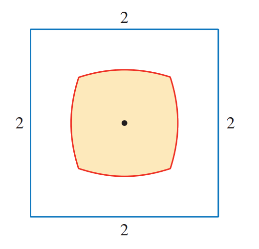

(Stewart)
Find the interval \([a,b]\) for which the value of the integral \(\int_a^b (2 + x - x^2) \,\mathrm{d}x\) is a maximum.
(Stewart)
If \(f\) is a differentiable function such that
\(\int_0^x f(t) \,\mathrm{d}t = \big(f(x)\big)^2\) for all \(x\),
find a formula for \(f\).
(Stewart)
The figure shows a region consisting of all points inside a square
that are closer to the center than
to the sides of the square. Find the area of the region.

(Stewart)
Evaluate \(\int \frac{\mathrm{d}x}{x^7-x}\).
The straightforward approach would be to start
with partial fractions, but that would be brutal.
Try a substitution.
The \(x \leftrightarrow \frac 1 x\) Trick
Show that the integral
\[
\int\limits_{0}^{\infty} \frac{\ln(x)}{1+x^2} \,\mathrm{d}x
\]
evaluates to zero by breaking up its domain of integration into two parts
based on where the integrand is negative or positive,
and using the substitution \(x \leftrightarrow \frac{1}{x}\)
on one of those parts.
Then use this same trick to show that the value of the following
integral doesn't depend at all on the value of the real number \(p\).
\[
\int\limits_{0}^{\pi/2} \frac{\mathrm{d}\theta}{1+\big(\tan(\theta)\big)^p}
\]
See this MathSE post
for some reading on this trick.